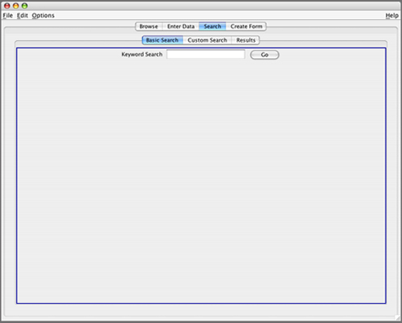
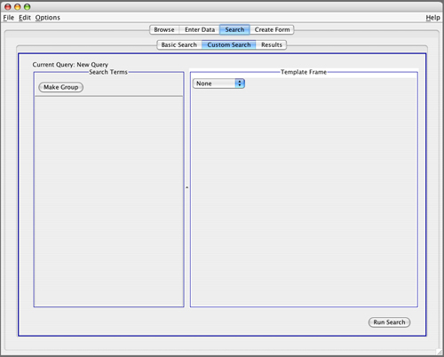
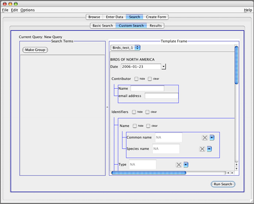
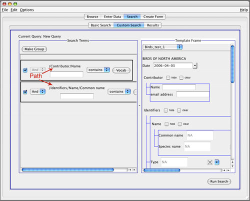
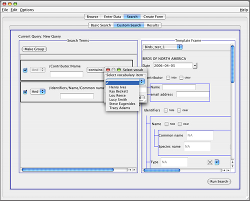
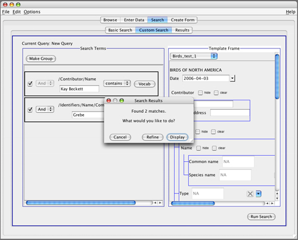
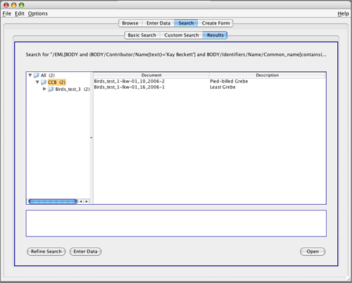

Searching the Database
Under the Search tab, there are two options for searching. The first, a basic keyword search, works like Google or other search engines you may be familiar with.

The Custom Search screen is divided into two panes. The left pane contains the data fields you are searching over. These fields are selected from all of the available data fields, which will be shown in the right pane.

In order to choose the data fields you want to search over, you'll need to select a Template from the drop-down menu in the right pane. In the example below, we chose the template called "Birds_test_1."

Now the data fields in the template on the right can be dragged over to the "Search Terms" pane on the left.
In the example below, the fields "Contributor Name" and the bird species "Common name" have been dragged over to the left, and the pane has been resized by sliding the bar in the middle.
Note that the XML path that acts as a unique address for each data field appears above it when it is dragged over to the left pane. This helps to illustrate the power of custom searches in NeuroSys, as the system allows the user to search values associated with just one particular path. If this weren't the case, searching for "Name" and "Smith" would return values for both birds and investigators whose name contained the value "Smith."

It is now possible to enter the terms you would like to search for in the database. If you don't remember, for instance, the contributor's name you are looking for, clicking the Vocab button will show you what values exist in the database. This is another feature that makes NeuroSys extremely useful, especially in promoting the use of a controlled vocabulary.
Be sure to change the value "equals" to "contains" if you do not choose a value from the vocabulary list.

After entering the terms you wish to search for (in this example, "Kay Beckett" and "Grebe"), clicking the Run Search button in the lower right will run the search and return the following dialog:

If you click the Display button, you will see the list of data forms that matched your search criteria displayed under the Results tab (shown below).
You can then select a form to open in Browse or Enter Data mode.
The custom search we just built can also be saved for future use.

| Previous page | Return to top of page | Next page |